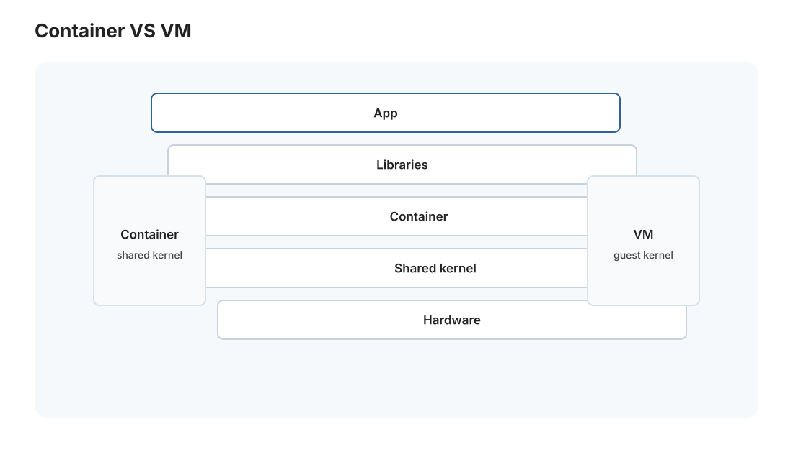
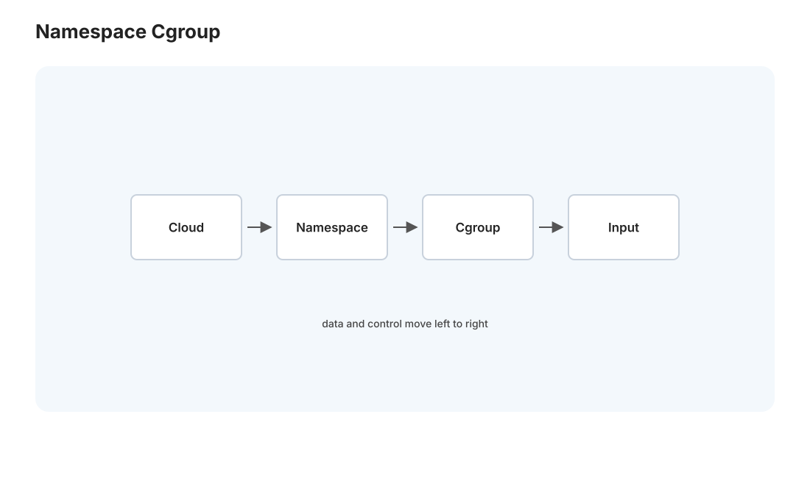
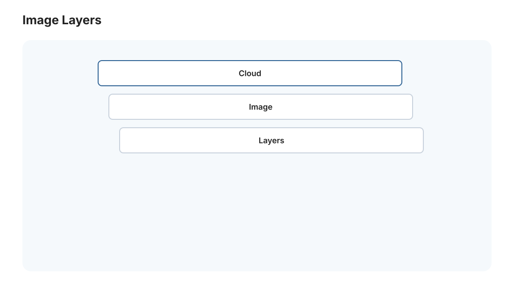

本页目录
云 I · 容器与 Docker 原理
对标：Docker 文档 / Container Security（Rice）/ 云原生课程 ｜ 前置：os 线（进程、虚拟内存、文件系统）、csapp-03（动态链接） 你的
medusa-postgres跑在 Docker 里，但容器底下到底是什么？它不是虚拟机，却能隔离；不装完整操作系统，却能跑起来。这一页拆穿容器的魔法——它其实是 Linux 内核的几个隔离原语（namespace + cgroup）+ 分层文件系统拼出来的"轻量隔离进程"。理解它，你就懂了为什么容器又轻又快、以及它和虚拟机的本质区别。
1. 容器解决的问题:"在我机器上是好的"
软件部署的经典噩梦：开发环境能跑、生产环境挂——因为依赖版本、系统库、配置不同（🔗 csapp-03 动态链接的 .so 找不到、Python 环境地狱）。容器把"应用 + 它的所有依赖 + 运行环境"打包成一个可移植的单元——一次构建、到处一样地跑。"消除环境差异"是容器的核心价值，也是 se-02 CD"可复现部署"的基石。
2. 容器不是虚拟机:两种隔离的本质区别

关键澄清——容器和虚拟机是两种不同的隔离：
| 虚拟机 | 容器 | |
|---|---|---|
| 隔离层 | 硬件级（Hypervisor 虚拟出整台机器） | 操作系统级（共享宿主内核） |
| 含什么 | 完整客户操作系统（自己的内核） | 只有应用 + 依赖，共享宿主内核 |
| 开销 | 重（GB 级、启动几十秒） | 轻（MB 级、启动毫秒） |
| 隔离强度 | 强（各有内核） | 较弱（共享内核，🔗 sec 线容器逃逸风险） |
核心洞察：容器不虚拟硬件、不带自己的内核——它就是宿主上的一个普通进程，只是被内核的隔离原语"关"进了一个看起来独立的环境。所以它轻（没有客户操作系统的重量）、快（就是启动个进程）。"容器 = 被隔离的进程，不是小虚拟机"——这是理解容器的第一步。
3. 容器的三块积木:namespace + cgroup + 分层镜像


容器的隔离幻觉由 Linux 内核三个机制拼成：
① Namespace（命名空间）——隔离"看得见什么" 让进程以为自己独占系统。几种 namespace 各隔离一样东西： - PID namespace：容器内进程以为自己是 PID 1、看不到宿主其他进程（🔗 os-01 进程）。 - Mount namespace：独立的文件系统视图（🔗 os-03，容器有自己的"根"）。 - Network namespace：独立的网络栈（自己的 IP、端口，🔗 net 线）。 - UTS/IPC/User namespace：主机名、进程间通信、用户 ID 的隔离。
"每个 namespace 隔离一种资源的可见性"——组合起来，容器内进程看到的是一个"只有自己"的干净系统，其实和宿主共享一个内核。
② Cgroup（控制组）——限制"能用多少"
namespace 管"看得见什么"，cgroup 管"能用多少"——限制一个容器的 CPU、内存、I/O 配额（🔗 os-01 调度、csapp-04 内存）。这样一个容器失控不会吃垮整机。docker run -m 512m 就是设 cgroup 内存限制。
③ 分层镜像（Union FS）——高效打包
容器镜像是分层的（每个 Dockerfile 指令一层），用联合文件系统叠起来：
- 层可共享：多个镜像基于同一个 ubuntu 层，只存一份（🔗 csapp-03 动态库共享、git 内容寻址 se-01 同思想——去重）。
- 写时复制：容器运行时的改动写到最上面的可写层，底层镜像只读不变（🔗 csapp-04 COW！同一个思想）。
- 可复现 + 高效分发：镜像有内容哈希、可推到仓库、拉取只下缺的层。
Dockerfile 就是"如何构建这个镜像"的声明式脚本——FROM 基础镜像 → COPY 代码 → RUN 装依赖 → CMD 启动命令，每行一层。
4. 容器化的实践与你的 Medusa
- 一个容器一个职责：
medusa-postgres一个容器跑数据库、应用一个容器——解耦、可独立扩展/重启（🔗 微服务思想）。 - 数据持久化：容器是"短暂的"（删了重建），但数据要留——用 volume（挂载宿主目录/持久卷）把数据存在容器外（你的 Postgres 数据在
D:\medusa-db，正是这个道理——容器可重建，数据在 volume 里不丢）。 - 容器编排的前奏：单机几个容器用
docker-compose（一个 YAML 描述多容器 + 网络 + volume）——Medusa 的 DB compose 就是它。多机、要自愈/扩缩容就上 K8s（cloud-02）。 - 镜像最佳实践：小基础镜像（alpine/distroless，🔗 sec 线减攻击面）、多阶段构建（构建环境和运行环境分离，产物更小）、别把密钥打进镜像（sec-02）。
读法：Docker 不是新技术的堆砌，是把 Linux 早就有的隔离原语（namespace/cgroup）+ 分层文件系统包装成好用的工具。你 memory 里"docker medusa-postgres（pgvector/pg17）在 Win""DB compose@D:\medusa-db""OPS 操作前备份"——这些运维操作背后的原理，本页全部讲清了。
5. 练习与要点
例 1（看容器就是进程） 在宿主上 ps 找到容器里进程的真实 PID——亲眼确认"容器内的 PID 1 在宿主上只是个普通进程"，容器不是虚拟机一次看穿。
例 2（分层与缓存） 写一个 Dockerfile，把"装依赖"放在"拷贝代码"之前——理解为什么这样能利用层缓存（代码变了不用重装依赖）。分层镜像的实用优化。
例 3（volume 保命） 演示删除并重建一个数据库容器，数据因为在 volume 里而不丢——理解"容器无状态、数据在 volume"，对照 Medusa 的 D:\medusa-db。\(\blacksquare\)
下一页：云 II——编排、K8s 与可观测性：从几个容器到成百上千个容器的自动化管理，以及怎么看见一个庞大系统的健康。